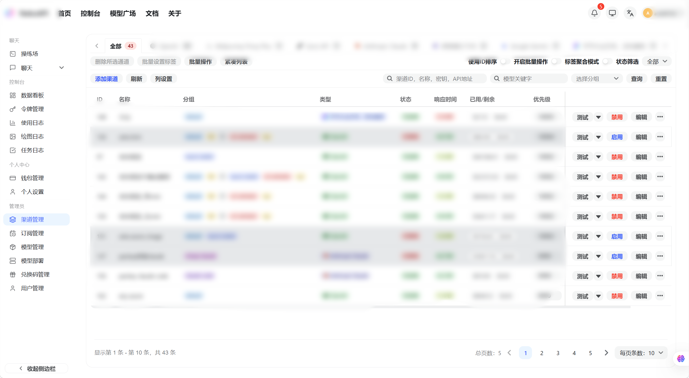
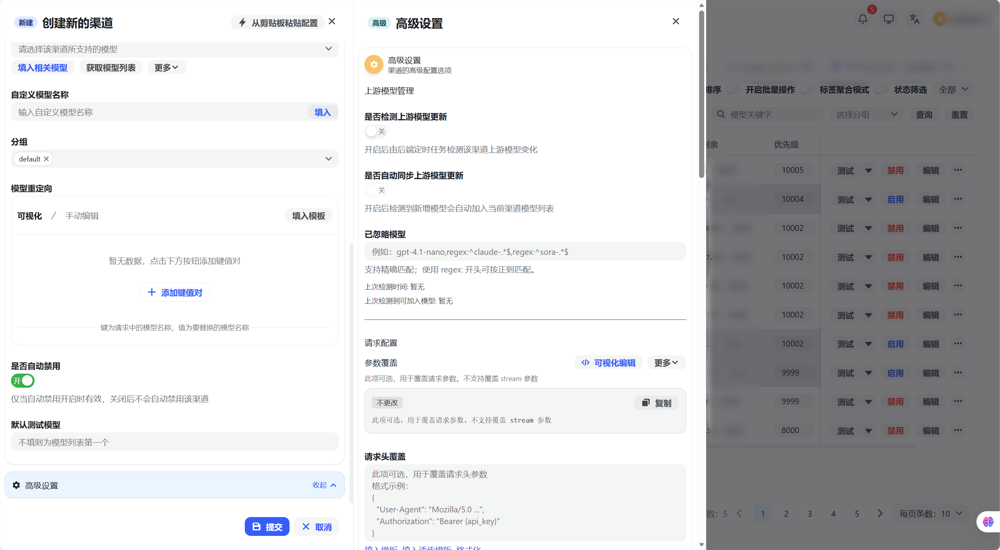
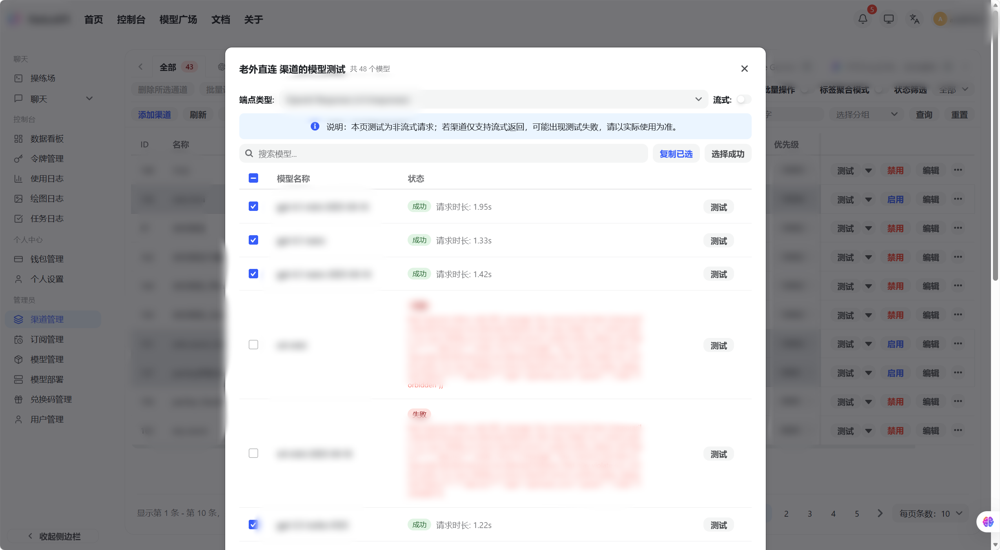
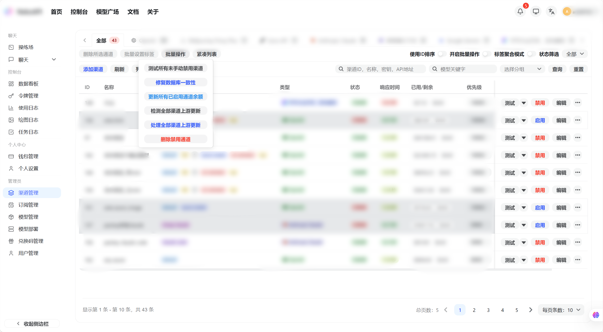
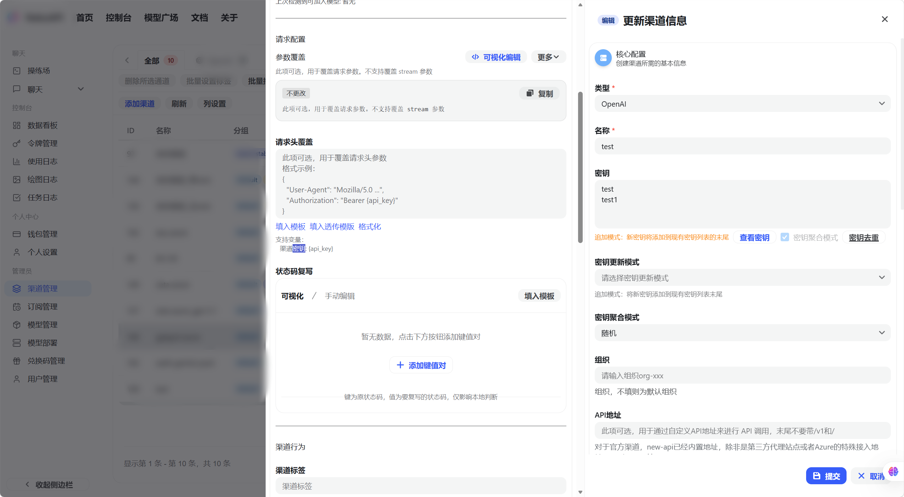

管理员指南
管理员指南
渠道管理
渠道是平台对接 AI 服务商的核心配置单元
渠道是平台对接 AI 服务商的核心配置单元,每条渠道对应一个服务商的 API Key。使用管理员账号登录后,左侧导航点击「渠道」,或直接访问 /console/channel。

渠道列表展示所有已配置的 AI 服务商渠道,包含名称、类型、状态(绿色=正常 / 红色=禁用)、响应时间、已用配额等信息。
添加渠道
基本配置
- 在渠道列表页点击右上角「添加渠道」按钮,弹出配置弹窗
- 在弹窗中选择服务商类型(如 OpenAI、Claude、Gemini 等)
- 填写渠道名称和 API Key
选择模型
在模型列表中勾选该渠道支持的模型,或点击「填入默认模型」自动填充
高级配置
按需展开高级配置,填写以下可选项:

| 配置项 | 说明 |
|---|---|
| Base URL | 自定义接口地址,代理或私有部署时使用 |
| 优先级 | 数值越高越优先被选中,默认为 0 |
| 权重 | 同优先级下的随机权重,默认为 0 |
| 模型映射 | 将用户请求的模型名映射为实际模型名,JSON 格式 |
| 参数覆盖 | 强制覆盖请求中的某些参数,JSON 格式 |
| 自动禁用 | 开启后连续失败达到阈值时自动禁用该渠道 |
提交保存
点击「提交」完成渠道添加,新渠道出现在列表中
渠道测试
单个渠道测试
- 在渠道列表中找到目标渠道,点击右侧操作栏中的「测试」按钮
- 等待测试请求完成,弹窗显示响应时间和成功/失败状态

响应时间越短说明该渠道速度越快。
批量测试
点击列表顶部「测试所有渠道」按钮一键批量测试。
批量操作
选择渠道
- 在渠道列表左侧勾选多条渠道的复选框
- 页面顶部出现批量操作工具栏

执行批量操作
点击对应按钮执行批量操作:
- 批量启用:将选中渠道状态改为正常
- 批量禁用:将选中渠道状态改为禁用
- 批量打标签:为选中渠道统一设置标签,便于分类管理
多 Key 模式
多 Key 模式允许一个渠道配置多个 API Key,系统自动轮询使用,单个 Key 失败后自动跳过,恢复后重新启用。
配置多 Key
- 在渠道列表中点击目标渠道右侧的「编辑」按钮
- 在编辑弹窗中找到「多 Key 管理」区域

- 点击「添加 Key」逐条输入多个 API Key
选择轮询模式
选择轮询模式:
| 轮询模式 | 说明 |
|---|---|
| 轮询(Round Robin) | 按顺序依次使用每个 Key |
| 加权随机 | 按权重随机选择 Key |
保存配置
点击「保存」完成配置
参数覆盖系统
参数覆盖系统支持两种模式：简单覆盖模式（向前兼容）和高级操作模式。通过灵活的条件判断和操作类型，可以实现复杂的参数动态调整。
简单覆盖模式
向前兼容性，直接指定要覆盖的字段和值，系统会将这些字段合并到原始请求中：
{
"temperature": 0.8,
"max_tokens": 2000,
"model": "gpt-4"
}高级操作模式
通过 operations 数组定义复杂的参数操作，支持条件判断、数组操作、字符串拼接与字符串规范化等高级功能。
基本结构
{
"operations": [
{
"path": "temperature",
"mode": "set",
"value": 0.8,
"conditions": [...],
"logic": "AND"
}
]
}